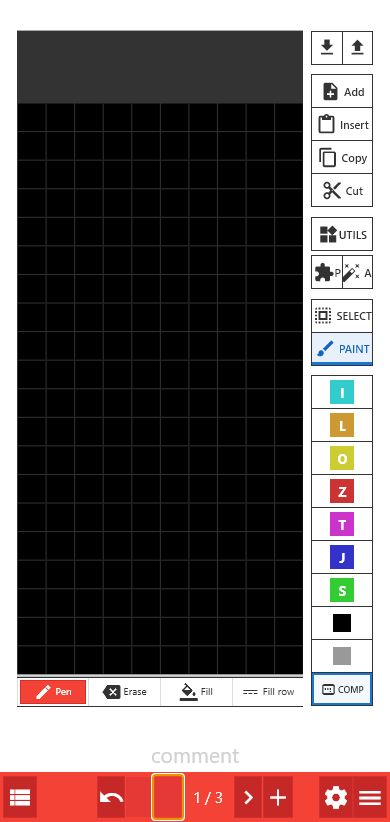
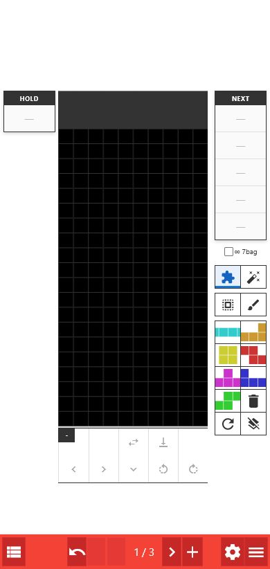
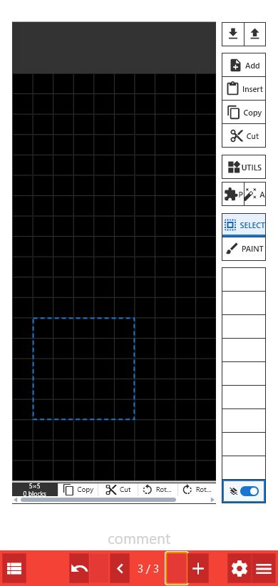
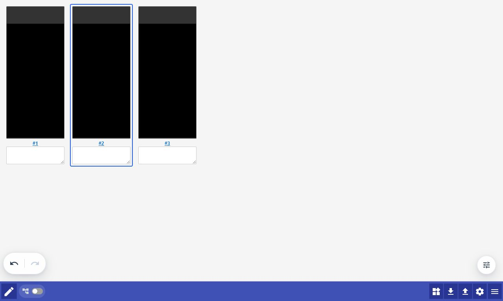
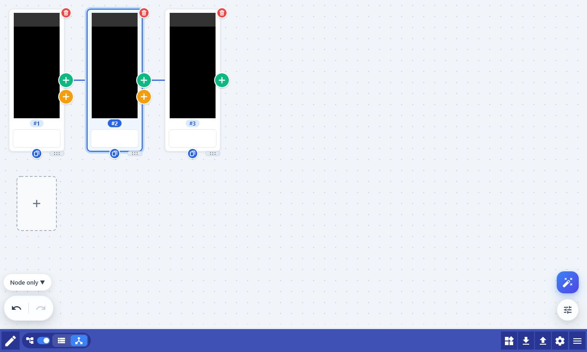
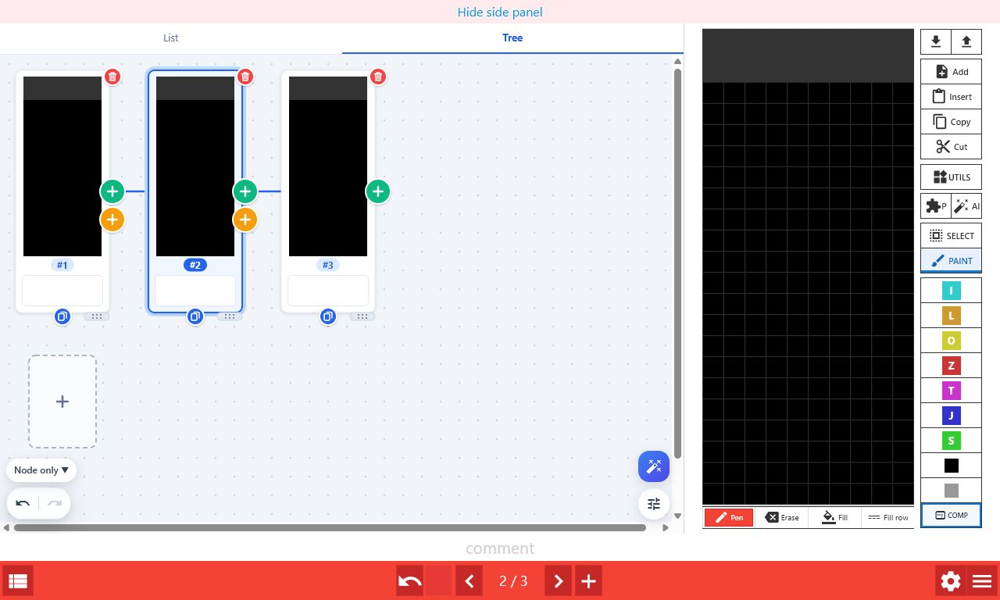
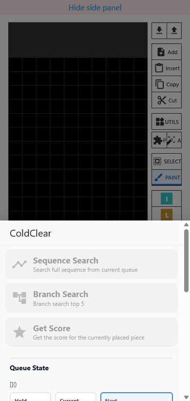

Get started
This manual is created and maintained with generative AI using the implementation and the live app as its basis.
- Open Fumen Mobile Fork.
- Choose a color in the editor, then tap or drag across the field to place blocks.
- Press + at the bottom to create the next page.
- Use the list icon at the bottom left to inspect all pages.
- Open import, sharing, settings, or Help from the menu at the bottom right.
The four screens
Reader
View completed fumen data. It is useful for moving between pages, playing the animation, and checking comments. Select the pencil icon to move to Edit.
Edit
Edit the field, pieces, comments, and pages. Most work starts on this screen.
List
Review every page as a card. It is useful for reordering pages, editing comments in bulk, and exporting images or URLs.
Tree
Branch from the same position into multiple sequences. It is useful for organizing candidate moves, setups, and completions.
Switch between List and Tree with the List and Tree tabs in the same overview screen. When Tree mode is enabled, page order follows the tree structure. On PC, List or Tree can also appear in a side panel beside Edit.
Edit the field

Draw with PAINT
Pen
Choose from seven colors, black, or gray, then tap or drag to place blocks. Long-press a color to spawn its corresponding piece and switch to PIECE.
Erase
Remove blocks. When Delete spawn mino when paint drag passes over it is enabled, the drag also removes SPAWN pieces it passes over.
Fill and Fill row
Fill a connected area or one row with the selected color. Choose the empty color to erase the same area.
COMP
Select four cells to infer a piece from its shape and confirm it with the matching color. Long-press to clear colored blocks while leaving gray blocks, and remove SPAWN pieces.
The right-side rail
| Button | What it does | Long press |
|---|---|---|
| Import (down arrow) | Open the modal for inserting or loading data from the clipboard | — |
| Export (up arrow) | Open the modal for saving images, sharing fumen data or URLs, and opening external sites | — |
| Settings (gear) | Open the Field tab of User Settings directly | — |
| Add | Add a page after the current page | — |
| Insert | Insert clipboard fumen data or a field image as the next page | Replace all pages with the loaded content |
| Copy | Copy the current page in fumen v115 format | Copy all pages |
| Cut | Copy and delete the current page | Cut all pages |
| Utilities | Open panels for mirroring, sliding, and field conversion | — |
| Flags | Open the panel for page information such as Lock, Rise, and Mirror | — |
| AI | Open the Cold Clear search menu | — |
Switch between PAINT, PIECE, and SELECT
| Mode | Main actions |
|---|---|
| PAINT | Use Pen, Erase, Fill, and Fill row. The palette shows block colors. |
| PIECE | Spawn pieces from the palette, then use Hold, hard drop, horizontal movement, soft drop, and rotation. Long-press horizontal movement to move to the edge. |
| SELECT | Drag across the field to select a rectangle, then copy, cut, rotate, or mirror it. |
Press the selected mode button again to show or hide the context tools below the field. Scroll the tray horizontally when the available width is too small.
HOLD and NEXT in PIECE

- HOLD / NEXT: These appear only in PIECE. NEXT is listed upward from the nearest piece.
- Piece queue settings: Select HOLD or NEXT to open the settings. The input is stored in the page comment as queue data such as
#Q=[](I)OTLJSZ. - Palette: Select a piece to spawn it. Delete removes a SPAWN piece, RESPAWN resets its position and rotation, and ∞ 7bag toggles automatic queue generation.
Reuse a region with SELECT

- Choose SELECT and drag from the start point to the end point on the field.
- Choose Copy, Cut, Rotate left, Rotate right, or Mirror from the context tools.
- Copied or cut regions are saved in an empty palette slot. Select that slot, then tap the field to stamp it.
- Pin a slot to keep the part saved. COMP controls whether empty cells pass through when stamping.
Utilities and Flags
- Mirror all pages: Mirror every page horizontally.
- Slide: Move the field up by one row and gray out the newly empty bottom row.
- Lock: Lock pieces on the page so line clears are applied when moving to the next page.
- Panels: Drag a panel heading to move it. Closing with the close button or Esc keeps the PAINT, PIECE, and SELECT choice.
Pages and comments
Move between pages
Use the left and right buttons at the bottom. Long-press to jump to the first or last page.
Insert in the middle
Use + or Insert even when a next page already exists. The new page is inserted between the current and next pages.
Undo and redo
Undo or redo the latest edit. History is preserved when editing across screen modes.
Comments
Write explanations or NEXT queue data in the field below the board. In List, edit comments while viewing all pages or replace text in bulk.
Organize pages in List
Open it with the list icon at the bottom left of the editor.

- Select a card once to make it active, then select the active card again to move to its Edit screen.
- Use #page number links to move to a page. In the side panel, only the Edit field on the right updates.
- Drag a card to reorder pages. Reordering is disabled while Tree mode is enabled.
- Edit a comment directly in its text area. Use Utilities and Replace to replace text across all pages.
- Use the bottom bar to return to Edit, toggle Tree mode, switch between List and Tree, open Utilities, open Import/Export, or open Settings. Undo/Redo is at the bottom left, and View settings is the floating button at the bottom right.
- Utilities: Mirror all pages, gray out pages, clear pages, or replace comments without leaving List.
- View settings (the bottom-right button) includes the Trim top blank switch and a Zoom slider. The slider snaps near 100%, and tapping the percentage returns to 100%. Use Ctrl + the mouse wheel to zoom on PC.
Branch with Tree
- Choose Enable tree mode at the top of List.
- Select the tree icon to switch to Tree.
- Select the node to branch from, then use the colored buttons to create the next sequence.

Add, move, and delete
| Action | Click | Drag a node over another node |
|---|---|---|
| Green plus | Add a page as a continuation of the selected node | Move it after that node |
| Orange plus | Add a new branch from the selected node | Move it to the branch |
| Blue duplicate | Duplicate a node or branch | — |
| Delete page | Delete the pages in the selected Move/Delete scope. Undo from the notification immediately afterward. | — |
- Move/Delete: Choose Node only, Node & descendants, or Descendants only from the bottom-left chip. The same scope applies to moving and deleting.
- Descendants only: Keep the node and move or delete only its descendants. The green button is available when there is one direct child. Only when the destination is a leaf node can multiple child subtrees be moved while keeping their original order.
- Delete: Select the Delete page icon at the top right of a node. Restore it with Undo in the notification after deletion. The last page cannot be deleted.
- Select a node: Select a card once to make it active, then select the active card again to move to its Edit screen.
- Disable Tree mode: A confirmation dialog appears because the tree data will be removed.
- Add a parent tree: Create an independent root that is not connected to the existing branches. Use it to manage another set or loop in the same fumen.
- Gray out with + button: When + creates a page, blocks after line clear are grayed out. You can enable Do not gray out on hard drop.
- To the active node: Export only the pages from the root through the selected node as a PNG or share URL.
#TREE=.... Do not delete or rewrite this string while using Tree. Other fumen tools may display it as an ordinary comment.The PC side panel
On PC, show List or Tree on the left while keeping Edit open. This is useful for checking all pages or branches while editing the field.

- Select Show side panel at the top of the screen. You can also toggle it from User Settings > List & Tree > Show side panel (PC).
- Choose the List or Tree tab.
- Select a card or node and edit the field on the right. Comments and the current page stay synchronized.
- List tab: Move between pages, edit comments, and drag to reorder. Reordering is disabled in Tree mode.
- Tree tab: Enable Tree mode, add continuations and branches, duplicate or delete nodes, choose the Move/Delete scope, and move between pages.
- View settings and Zoom: Use the settings button at the bottom right of the panel for the same zoom slider and display settings as full-screen mode. The Move/Delete chip is at the bottom left and the AI button is above the settings button.
- Resize: Drag the divider at the right edge of the panel. Double-click the divider to return to the automatic width.
- Availability: This is a PC feature. The panel hides automatically below 1024px and reappears when the viewport is wide enough.
Analyze with Cold Clear
- Select the blue AI button in Edit, List, or Tree.
- Set Hold, Queue, B2B, and Combo to match the current situation.
- Review the search settings and run the search that matches your goal.

Three searches
Sequence Search
Add AI moves through the end of the configured queue. Use it when you first want to see one complete line.
Branch Search
Add the top candidates at each position to Tree. Use it to compare several possible moves.
Get Score
Ask the AI to evaluate a piece that has already been spawned on the field. Use it to compare your own moves.
Enter a queue
- Select the Hold, Current, or Next field, then enter pieces with the I O T L J S Z buttons.
- Clear removes the currently selected field.
- +1bag appends one bag of all seven pieces to Next.
- B2B: Set the current Back-to-Back state. Combo: Set the current Combo (REN) count.
- When a queue string is present in the comment, it is read automatically. Check existing ordinary comments before editing them.
Search settings
| Setting | Meaning | Guideline |
|---|---|---|
| Hold usage | Allow Hold during search | Turn it on to match a real game |
| NEXT limit | Limit known NEXT pieces passed to the AI from 0 to 30 | Use it when comparing only the visible NEXT pieces |
| Think Time | Search for 0.2 to 5 seconds per move | Start with 1 second; use less for speed and more for accuracy |
| Weights Default | Standard evaluation strategy | Use this in most cases |
| Weights Fast | An evaluation strategy that more readily favors digging and REN over T-spins | Use it for speed or digging comparisons |
| Speculate | Predict and search pieces beyond the known queue | Expand candidates when NEXT is short |
| Top candidates | Number of candidates kept by Branch Search: 1–20 | More candidates increase processing time and output size |
While a search is running, use Stop Search from the same menu. Progress is also shown on the AI button.
User settings
| Tab | Main settings |
|---|---|
| Field | Show FLAGS, Delete spawn mino when paint drag passes over it, Gray out with + button, Do not gray out on hard drop, and Block surface marker |
| List & Tree | Trim top blank, Gray out with + button, and Show side panel (PC) |
| Shortcuts | Show shortcut labels, palette, edit, and piece shortcuts |
| Piece | Piece Shortcuts, Show the ghost, Kick table, and ARR, DAS, DCD, and SDF (frame units) |
| Others | Loop on page navigation [Reader], Initial screen, Open fumen with tree data (#TREE) in Tree screen, and GIF page interval |
- Show shortcut labels: Display the assigned key at the bottom right of each button.
- Change a key: Select a field and press a key. Press Backspace to clear the assignment.
- Kick table: Choose Classic, SRS, or SRS+. SRS+ also supports 180° rotation.
- Initial screen: Choose Reader, Edit, List, or Tree as the screen opened at startup. You can also open fumen data containing
#TREEin Tree. - Gray out with + button: Changing this in either Field or List & Tree updates the same setting.
- Side panel: Enable the List or Tree panel beside Edit with Show side panel (PC).
- Saving settings: Settings are saved in the browser. Clearing browser data resets them.
Useful operations
| Action | Result |
|---|---|
| Long-press previous or next page | Move to the first or last page |
| Long-press the List icon | Enable Tree mode and open Tree |
| Long-press the menu | Create a new fumen |
| Long-press PIECE | Delete SPAWN pieces from the field |
| Press the selected PAINT, PIECE, or SELECT button again | Show or hide the context tools below the field |
| Long-press a color | Spawn its corresponding piece |
| Long-press black | Clear the whole field and remove SPAWN pieces |
| Long-press gray | Turn all colored blocks gray while leaving empty cells unchanged |
| Long-press COMP | Clear colored blocks while leaving gray blocks, and remove SPAWN pieces |
| Right-click the field | Place a black block (PC only) |
| HOLD in PIECE | Swap HOLD and the current piece, and update the page comment queue |
Troubleshooting
Pages cannot be reordered
List drag-reordering is disabled in Tree mode. Move nodes in Tree while preserving the tree structure, or disable Tree mode.
Cold Clear cannot run
Check that the Queue is not empty. Get Score requires a SPAWN piece on the field. Some settings cannot be changed during a search.
An image cannot be imported
Confirm that the image is on the clipboard and follows the field grid. Reduce margins and text, then select the field again.
The tree disappeared
Check that #TREE=... remains in the first page comment. If you saved or shared after deleting it, the original tree data may not be recoverable.
Settings were reset
Settings are saved in the browser. Clearing cache or site data, using another browser, or using another device does not carry them over.
The shared result looks different
Open the share URL again and check the kick table, Trim top blank, and Tree mode settings.